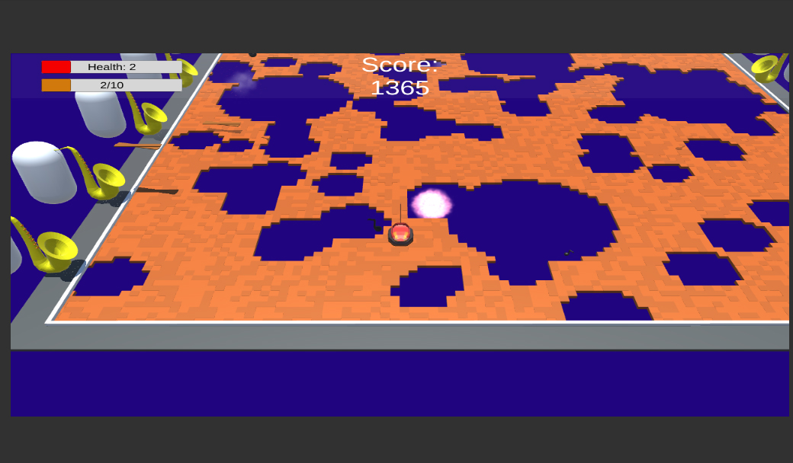

Beansjam: Mobile

Dieses Spiel ist das Ergebnis der Teilnahme am BeansJam: Mobile. Das Thema des Jams war Blues & Jahrmarkt. Es ist ein Mobile Spiel und muss mit dem Lagesensor des Smartphones gesteuert werden. Im Spiel geht es darum so lange zu überleben wie möglich, um einen hohen Score zu erreichen. Man steuert einen Autoscooter mit dem man den auf das Spielfeld einschlagenden Notenbomben ausweichen muss. Es gibt 3 verschiedene Arten von Noten, welche ein eigenes Verhalten haben. Beim einschlagen auf das Spielfeld reißen sie Löcher in den Boden, in die der Spieler fallen kann. Der Autoscooterfahrer hat jedoch die Möglichkeit die zufällig auf dem Spielfeld auftauchenden Holzbretter einzusammeln. Wenn 10 dieser Bretter eingesammelt wurden, wird das Spielfeld wiederhergestellt und die Löcher verschwinden.
